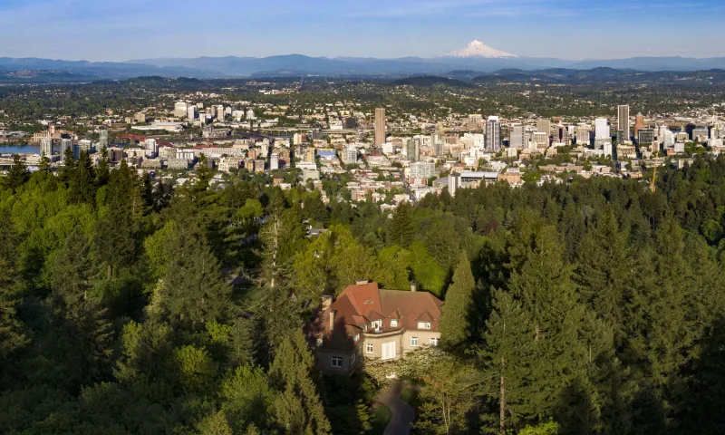

In The City
Shamrock Run
-
The Shamrock Run is Portland’s longest running tradition and offers sweeping views of Portland’s skyline, Willamette River waterfront,
and at least seven unique bridges. The post-race ‘Finish Line Festival’ welcomes both runners and spectators, featuring a green beer
garden and live music for a St. Patrick’s Day party like no other.
-
Best time to go: This event takes place in March.
Cherry blossoms on Tom McCall Waterfront

-
The 100 Akebono cherry trees that line the waterfront were gifted by the Japanese Grain Importers Association in 1990. Every year, the trees explode with
pink flowers that completely change the landscape.
-
Best time to go: Mid March-Early April
-
Tip: This spot can get busy so arrive early if you want photos without crowds — plus, the sunrise glow is hard to beat and worth an early wake-up call.
International Rose Test Garden
-
More than 10,000 individual rose bushes bloom from late May through October, representing over 610 different rose varieties.
-
Best time to go: Late May-June
-
Tip: Spend an evening picnic here or do a morning stroll and pair it with an afternoon hike or lunch and shopping nearby!
Portland Rose Festival
-
Every year, the City of Roses throws itself a massive party that includes more than 60 events like parades, carnival rides, art shows,
dragon boat races, fun runs, and more.
-
Best time to go: This event takes place May-June.
Bike the Worst Day of the Year Ride
-
With donuts and coffee at the start, a halftime party, AND an after-party, this whacky 15-mile bike ride shouldn’t be missed!
There is also a costume party with prizes and dressing up is encouraged.
-
Best time to go: This event happens annually in March.
Portland Saturday Market
-
Combining the vibes of an art show, a live street concert, and an open-air bazaar, Portland Saturday Market has been a beloved Rose City tradition since 1974.
-
Best time to go: Runs March-December.
Hikes
Lower Macleay Park to Pittock Mansion

-
Drive time from Portland: 15 minutes
-
Mileage: 5
-
Best time to go: Year-round, on a clear day
-
Tip: Hike past Witches Castle and see a great view of Portland! Option to take a
paid tour of Pittock Mansion when you’re there.
Angles Rest

-
Drive time from Portland: 30 minutes
-
Mileage: 4.5
-
Best time to go: Year-round! Great easy hike for Winter and Spring weekends or a perfect after-work hike in Summer.
Eagle Creek Trail to Tunnel Falls

-
Drive time from Portland: 40 minutes
-
Mileage: 12
-
Best time to go: Winter or Spring for peak flow, after a dry spell for a less muddy trail.
Camassia Preserve Loop Trail

-
Drive time from Portland: 20 minutes
-
Mileage: 1.5
-
Best time to go: April-Early May.
-
Tip: Stop in Oregon City on the way there or back.
Falls Creek Falls Loop

-
Drive time from Portland: 1 hour 15 minutes
-
Mileage: 6
-
Best time to go: April-May.
-
Tip: Pair with a stop in Carson, WA for some food.
White River Falls

-
Drive time from Portland: 2 hours
-
Mileage: 1
-
Best time to go: Spring before the falls dry up.
-
Tip: Make it a weekend trip and camp at Macks Canyon Campground where there’s hiking from your tent.
Columbia Hills Vista Loop
-
Drive time from Portland: 1.5 hours
-
Mileage: 6.5
-
Best time to go: Late April-May for wildflowers.
-
Tip: These wildflowers are lower elevation than Dog Mountain so their peak bloom happens first.
Dog Mountain

-
Drive time from Portland: 1 hour
-
Mileage: 6.5
-
Best time to go: Late May-Early June for wildflowers.
-
Tip: Go after work (eat dinner before!) to avoid crowds and not have to deal with getting a permit. Stay for sunset for the best views.
{kind=link}
{kind=link}
{kind=link}